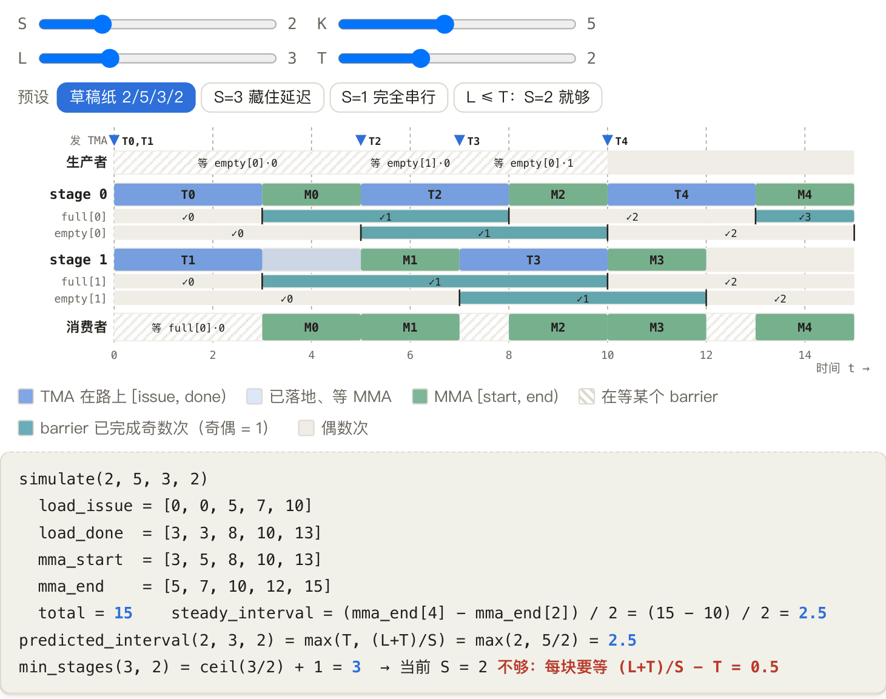
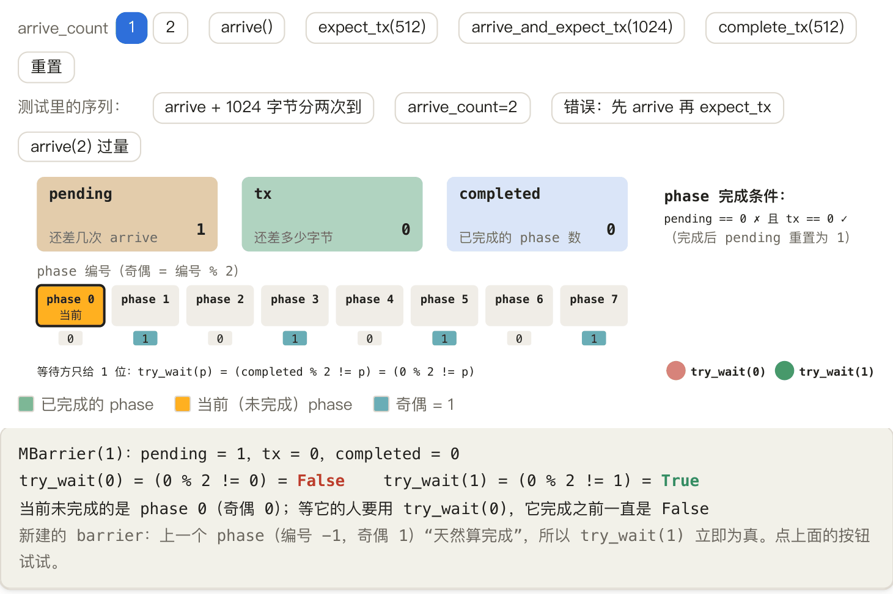
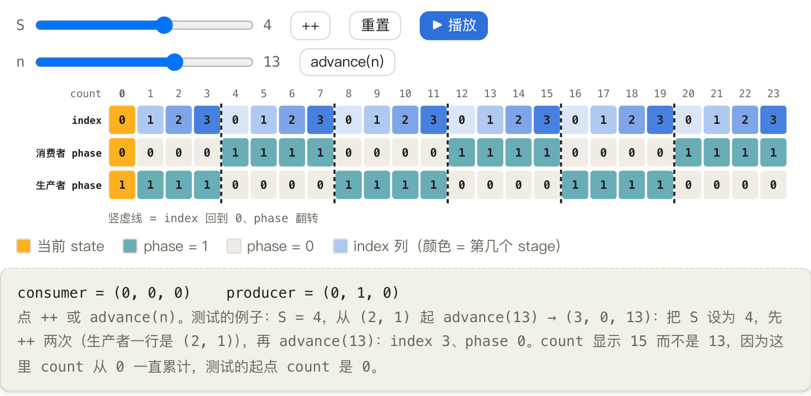
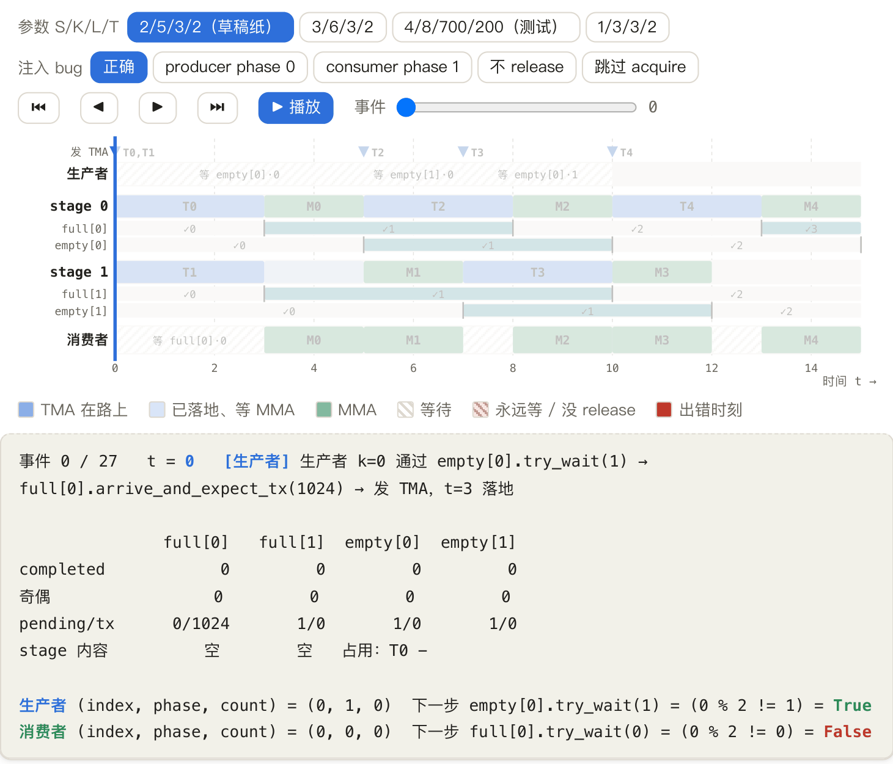
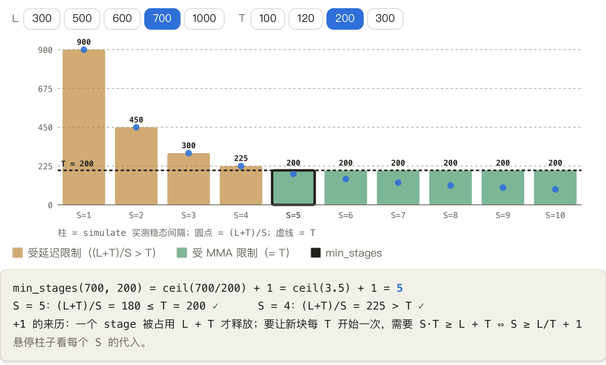

D2 · mbarrier 多级流水线：phase 奇偶、PipelineState、producer / consumer 协议与三种同步 bug
TMA 是异步的：指令发出去就返回，数据几百个周期后才落地。要让搬运和计算重叠，就得有 S 个 SMEM stage 轮流用，并且用屏障保证“没到的不读、没用完的不覆盖”。本题复刻 Hopper 的 mbarrier 语义和 CUTLASS 的 PipelineState / PipelineTmaAsync 协议（PipelineState 与真实 CUTLASS 逐步对拍），再用离散事件模拟主循环：算出 ceil(L/T)+1 这个 stage 数从哪来，并亲手造出死锁和数据竞争。
文件: mine/d2_mbarrier_pipeline.py 你的代码 · tests/test_d2_mbarrier_pipeline.py 测试 · solutions/d2_mbarrier_pipeline.py 参考解
题面速览
- 背景知识：先读 时间维度 的 pipeline 一节，再做完 D1（expect_tx 字节数从那里来）。
- 在体系里的位置：Hopper GEMM 的主循环由 PipelineTmaAsync 驱动；循环变量是 PipelineState，生产者的起点由 make_producer_start_state 给出。屏障本身是 ClusterTransactionBarrier，底层是 PTX 的
mbarrier.*指令。 - 你要实现：
MBarrier（arrive、expect_tx、arrive_and_expect_tx、complete_tx、try_wait）、PipelineState（increment、advance、as_tuple）、producer_start_state、simulate、predicted_interval、min_stages。三个异常类和SimResult已经给出。 - 关键规则：
- phase 完成 = 待到达数为 0 且 tx 字节为 0；
try_wait(p) == (completed % 2 != p)。 PipelineState的 index 到 S 回 0 时翻转 phase；生产者从 phase 1 起步，消费者从 phase 0 起步。- 生产者：等
empty[i]→full[i].arrive_and_expect_tx→ 发 TMA；消费者：等full[i]→ MMA →empty[i].arrive。 - 稳态间隔
max(T, (L+T)/S)，最小 stage 数ceil(L/T) + 1。
- phase 完成 = 待到达数为 0 且 tx 字节为 0；
验收要点：新 barrier 的奇偶 · arrive 到了但字节没到不算完成 · 先登记字节再 arrive · arrive 过量报错 · increment 序列（含 S = 1）· advance 等于重复 increment · PipelineState 的 4 条序列和 7 个 advance 与真实 CUTLASS 相同 · S = 4、K = 8 的完整时间线 · S = 1..6 的稳态间隔等于公式 · min_stages 恰好藏住延迟、多了没用 · 短循环没有稳态 · 四种 bug 分别死锁或数据竞争。
- mbarrier（memory barrier）：放在 shared memory 里的 64 位异步屏障。它有一个 phase（阶段）计数：每当预期的 arrive 次数和预期的字节都到齐，当前 phase 完成，进入下一个。
- parity（奇偶）：等待时只告诉它“我等的是第奇数个还是第偶数个 phase”，而不是完整编号。只用 1 位，所以 S 个 stage 轮转时必须自己记住 phase 位。
- transaction 字节（tx）：TMA 落地时，硬件直接在 mbarrier 上扣掉对应字节数（
complete_tx），不需要任何线程 arrive。 - full / empty barrier：每个 stage 两个 mbarrier。full：数据到了；empty：消费者用完了，可以覆盖。
- WG（warp group，4 个 warp = 128 线程）：Hopper 上 WGMMA 的执行单位。主循环的消费者是一个或两个 WG（D3）。
直觉与类比
厨师（生产者）和食客（消费者）之间只有 S 个盘子在转。每个盘子上有两盏灯：绿灯（full）亮表示“菜做好了”，红灯（empty）亮表示“吃完了，可以再装”。灯只显示“这是第奇数轮还是偶数轮”，所以厨师和食客各自记一个“我现在等第几号盘子的第几轮”（PipelineState）。厨师一开始等的是“上一轮的红灯”，新盘子默认已经是空的，所以直接通过（phase 1 起步）。厨师记错了轮次，就会等一盏永远不会再亮的灯（死锁）；食客记错了，就会把空盘子当成菜（数据竞争）；食客吃完不按红灯，厨师转完一圈就再也拿不到盘子（饿死）；厨师不看红灯直接装菜，就会把还没吃完的菜倒掉（覆盖）。
图解：一个 stage 的生命周期
从小例子开始：先在草稿纸上手算
先别管 S = 4、L = 700。拿一个小到每个事件都能写出来的例子：2 个 stage、5 块、TMA 延迟 L = 3、MMA 时间 T = 2。把每一块用哪个 stage、生产者和消费者各等哪个奇偶、每个 barrier 完成了几次，一行一行写在纸上，规律就清楚了。然后再放大到测试的 S = 4、K = 8，最后写成一般公式。
① 小：S=2, K=5, L=3, T=2
一共 28 个事件，每个都能手写。L > T，2 个 stage 藏不住延迟，消费者每轮空等 1。
mma_start = [3, 5, 8, 10, 13]，total =
15
稳态 2.5 = (3+2)/2 > T = 2
min_stages(3, 2) = ceil(1.5) + 1 = 3
② 测试：S=4, K=8, L=700, T=200
和 ① 同一个递推，只是数字变大。
load_issue = [0,0,0,0,
900,1100,1300,1500]
mma_start = [700,900,1100,1300,
1600,…,2200]
total = 2400，稳态 225，min_stages = 5
③ 写错的协议（仍用 ①）
每种 bug 在哪一刻、哪个 barrier 上出事：
P 起点 phase 0 → t=0 死锁
C 起点 phase 1 → t=0 读空 stage 0
不 release → t=7 死锁
跳过 acquire → t=0 tile 2 覆盖 stage 0
④ 一般
把 ① 的表格抽象出来：
index = k % S，轮次 r = k // S
消费者 phase = r % 2，生产者 phase = 1 − r
% 2
issue[k] = 0 (k<S) 或 mma_end[k−S]
mma_start[k] = max(issue[k]+L,
mma_end[k−1])
✎ 草稿纸：S = 2，K = 5，L = 3，T = 2（同一时刻生产者先走）
1) 每块用哪个 stage、等哪个奇偶 index = k % 2，轮次 r = k // 2
k 0 1 2 3 4
index = k % 2 0 1 0 1 0
r = k // 2 0 0 1 1 2
生产者 (index, phase) (0,1) (1,1) (0,0) (1,0) (0,1) ← 起点 (0,1)：phase = 1 − r%2
消费者 (index, phase) (0,0) (1,0) (0,1) (1,1) (0,0) ← 起点 (0,0)：phase =
r%2
→ 同一块上两者的 phase 永远相反：生产者等“上一轮被吃完”，消费者等“这一轮被装好”
2) 新 barrier：completed = 0，try_wait(p) = (completed % 2 != p)
try_wait(1) = (0 != 1) = True try_wait(0) = (0 != 0) = False
3) 逐个时刻（括号里是 barrier 的 completed 数）
t=0 P k=0 empty[0].try_wait(1) = (0≠1) ✓ → full[0]: tx += 1024, arrive → 发
TMA，t=3 落地
P k=1 empty[1].try_wait(1) ✓ → 发 TMA，t=3 落地
P k=2 empty[0].try_wait(0) = (0≠0) ✗ 阻塞
C k=0 full[0].try_wait(0)：arrive 到了但 tx = 1024 ≠ 0，phase 未完成 ✗ 阻塞
t=3 TMA 落地：full[0] (1)、full[1] (1)
C k=0 full[0].try_wait(0) = (1≠0) ✓ → MMA [3, 5)
t=5 C 算完 0 → release：empty[0] (1)
C k=1 full[1].try_wait(0) ✓ → MMA [5, 7)
P k=2 empty[0].try_wait(0) = (1≠0) ✓ → 发 TMA，t=8 落地
P k=3 empty[1].try_wait(0) = (0≠0) ✗ 阻塞
t=7 C 算完 1 → release：empty[1] (1)
C k=2 full[0].try_wait(1) = (1≠1) ✗ 阻塞 ← tile 2 还在路上，空等 1
P k=3 empty[1].try_wait(0) ✓ → 发 TMA，t=10 落地
P k=4 empty[0].try_wait(1) = (1≠1) ✗ 阻塞
t=8 TMA 落地：full[0] (2) C k=2 full[0].try_wait(1) = (0≠1) ✓ → MMA [8, 10)
t=10 TMA 落地：full[1] (2)；C 算完 2 → release：empty[0] (2)
C k=3 full[1].try_wait(1) ✓ → MMA [10, 12)
P k=4 empty[0].try_wait(1) = (0≠1) ✓ → 发 TMA，t=13 落地；生产者结束
t=12 C 算完 3 → release：empty[1] (2)；C k=4 full[0].try_wait(0) = (2%2≠0) ✗ 阻塞 ← 又空等 1
t=13 TMA 落地：full[0] (3) C k=4 ✓ → MMA [13, 15)
t=15 C 算完 4 → release：empty[0] (3)。结束
4) 结果
load_issue = [0, 0, 5, 7, 10]
load_done = [3, 3, 8, 10, 13] = load_issue + 3
mma_start = [3, 5, 8, 10, 13] = max(load_done[k], mma_end[k−1])
mma_end = [5, 7, 10, 12, 15] total = 15
steady_interval = (mma_end[4] − mma_end[2]) / S = (15 − 10) / 2 = 2.5
predicted_interval(2, 3, 2) = max(2, (3+2)/2) = 2.5 ✓ min_stages(3, 2) =
ceil(3/2) + 1 = 3
5) 抽象成递推（没有 bug 时，和模拟逐块相同）
load_issue[k] = 0 (k < S，空 buffer 直接装)
= mma_end[k − S] (k ≥ S，等同一个 stage 的上一块被 release)
load_done[k] = load_issue[k] + L
mma_start[k] = max(load_done[k], mma_end[k − 1])
mma_end[k] = mma_start[k] + T
同一个 stage 的两次装填间隔 = L + T（落地 L，算 T），S 个 stage 轮流 → 每块 (L+T)/S；MMA 本身每块 T → 取大
下面这张图可以任意改 S、K、L、T。每个 stage 一条泳道：蓝色深 = TMA 在路上（T2 表示第 2 块），蓝色浅 = 数据到了、等消费者，绿色 = MMA（M2 ）。泳道下面两条细带是这个 stage 的 full[i] 和 empty[i] ：数字是已完成的 phase 数，颜色深浅是它的奇偶，竖线就是“phase 翻转”的时刻。灰色斜线是生产者或消费者在等。默认参数就是上面的草稿纸，对照着看；把 S 拖到 3，空等就消失了。

图解详解：屏障、状态机与主循环
这些图是交互版讲解页的静态快照，显示的是默认参数下的状态。文中提到的按钮、滑块和悬停提示在这里不能操作；图上的数字和下方的文字、表格、黑底面板说的是同一组值，可以直接对照你的函数输出。
前面的流程图只给了结构。这一节按“从下往上”的顺序画四张可交互的图：先是一个 mbarrier 本身（图 1），再是生产者 / 消费者各自手里的 PipelineState（图 2），然后把它们拼成主循环，一步一步走事件，并且可以注入每一种 bug 看它在哪里断掉（图 3），最后看 stage 数怎样决定吞吐（图 4）。
整道题对应的就是下面这段 CUTLASS 主循环的骨架（简化自 sm90_mma_tma_gmma_ss_warpspecialized.hpp 的 load /mma 两个函数）：
// 生产者 warp（发 TMA） // 消费者 warp group（做 MMA）
auto wr = make_producer_start_state<P>(); // (0,1,0) PipelineState rd; // (0
for (k = 0; k < K; ++k) { for (k = 0; k < K; ++k) {
pipeline.producer_acquire(wr); // 等 empty[i]·phase pipeline.consumer_wait(rd);
// + full[i] expect_tx mma(smem[rd.index()]);
copy(tma.with(*full[i]), gA(k), sA(wr.index())); pipeline.consumer_release(rd
++wr; // 图 2 ++rd;
} }
图 1 · 一个 mbarrier：arrive、tx 字节与 phase 奇偶
一个 mbarrier 只有三个数：还差几次 arrive（pending ）、还差多少字节（tx ）、已经完成了几个 phase（completed ）。两个都归零的那一刻，当前 phase 完成，completed + 1 ，pending 重置。等待方只给 1 位 parity：try_wait(p) 问的是“奇偶为 p 的那个 phase 完成了吗”，规则是 completed % 2 != p 。点按钮自己操作，看三格计数和下面的 phase 条怎样变化；试试“先 arrive 再 expect_tx”为什么会让 phase 提前完成。

源码对照：try_wait 就是一条 mbarrier.try_wait.parity ，见 ClusterBarrier::try_wait ；
arrive_and_expect_tx 是一条 mbarrier.arrive.expect_tx ，见 ClusterTransactionBarrier::arrive_and_expect_tx ；初始化 mbarrier.init 见 ClusterBarrier::init 。语义的权威定义在 PTX ISA 的 mbarrier 一节（phase、pending arrival count、tx-count 的定义）和 mbarrier.test_wait / try_wait（.parity 变体）。
图 2 · PipelineState：index 绕圈、phase 翻转
PipelineState 只是三个整数 (index, phase, count) 。每 ++ 一次：index + 1；index 到 S 就回 0，同时 phase 翻转。所以 phase 就是“已经绕了几圈”的奇偶。下面的格子横轴是 count（第几块），三行分别是 index、消费者的 phase（起点 0）、生产者的 phase（起点 1）。拖 S、点 ++ 或 advance(n)，看高亮列怎样移动，第三行永远是第二行取反。

的 increment / advance" loading="lazy" style="width:100%;aspect-ratio:1461/713">源码对照：PipelineState::operator++ （Stages == 1 单独一支：只翻转 phase）、PipelineState::advance （用 (index + n) / Stages 的奇偶决定是否翻转）、make_producer_start_state 。
图 3 · 主循环逐事件走一遍，并注入 bug
这是整道题的核心：生产者和消费者各拿一个 PipelineState，共享 2S 个 mbarrier。用 ◀ ▶ 或“播放”一步一步走事件日志，蓝色竖线是当前时刻（右边还没发生的部分被盖住）。下方面板打印这一刻每个 barrier 的三个数、两个 PipelineState，以及它们下一步要做的 try_wait 代入结果。
然后切换上面的 bug 按钮，看协议在哪里断掉：
- producer phase 0：生产者等 empty[0] 的 phase 0，可没人会让它完成（消费者在等 full[0]）。t = 0 两边都卡死。
- consumer phase 1：新 barrier 上
try_wait(1)立即为真，消费者在 TMA 落地前就去读 stage 0。 - 不 release：前 S 块正常；第 S+1 块的生产者等 empty[0] 永远不翻转。K ≤ S 时这个 bug 看不出来。
- 跳过 acquire：生产者不看 empty，绕完一圈直接往还在用的 stage 0 发 TMA。

源码对照：四个调用 producer_acquire 、consumer_wait 、consumer_release ；真实生产者循环（acquire → 拿 full barrier 交给 TMA → ++smem_pipe_write ）见 collective 的 load 循环。生产者退出前还要调用 producer_tail 把最后 S 个 empty 等完，防止 cluster 里别的 CTA 还在往它的 SMEM 写（本题不建模）。CUTLASS 自己的说明见 CUTLASS pipeline 文档。
图 4 · stage 数与稳态间隔：predicted_interval / min_stages
每根柱子是 simulate(S, 40, L, T) 实测的稳态间隔，虚线是 T（MMA 本身的下限），圆点是公式 (L + T) / S 。柱子先按 1/S 下降，碰到 T 就不再下降：第一个碰到 T 的 S 就是 min_stages = ceil(L/T) + 1 （描边的那根）。默认是测试用的 L = 700、T = 200。

速查
| 对象 / 函数 | 规则 | 小例子 S=2, L=3, T=2 |
|---|---|---|
MBarrier.try_wait(p) |
completed % 2 != p ；phase 完成 ⇔pending = 0 且 tx = 0 |
新 barrier：try_wait(1)=True,try_wait(0)=False |
arrive_and_expect_tx(b) |
先 tx += b ，再 arrive |
full[0]：pending 0，tx 1024 → 未完成 |
PipelineState. increment |
index+1，到 S 回 0 并翻转 phase；S=1 每次翻转 | 生产者 (0,1)→(1,1)→(0,0)→(1,0)→(0,1) |
advance(n) |
(index+n)//S 为奇数则翻转；index= (index+n)%S |
(1,1).advance(3)：4//2=2 偶 → (0,1) |
| 第 k 块 | index = k%S；消费者 phase = r%2；生产者 phase = 1−r%2（r = k//S） | k=4：index 0，r=2 → C 等 0，P 等 1 |
load_issue[k] |
0（k<S），否则 mma_end[k−S] | [0, 0, 5, 7, 10] |
mma_start[k] |
max(load_issue[k]+L, mma_end[k−1]) | [3, 5, 8, 10, 13] |
predicted_interval |
max(T, (L+T)/S) | max(2, 2.5) = 2.5 |
min_stages |
ceil(L/T) + 1 | ceil(1.5)+1 = 3 |
| bug → 错误 | producer phase 0 / 不 release → DeadlockError；consumer phase 1 / 跳过 acquire → RaceError |
逐步演示
生产者起点 (0, 1, 0)：在新的 empty barrier 上 try_wait(1) 立即为真。四个 stage 都通过，load_issue = [0, 0, 0, 0, …]。第 5 块要等 stage 0 的第 1 轮（producer_start_state(4) 增加 4 次后是 (0, 0, 4)）。
四块同时在 700 落地。消费者按 0、1、2、3 依次计算：mma_start = [700, 900, 1100, 1300]。
第 0 块在 900 算完并 release，生产者马上发第 5 块，700 之后（1600）才落地。消费者在 1500 算完第 3 块后空等 100。load_issue[4:] = [900, 1100, 1300, 1500]，load_done[4:] = [1600, 1800, 2000, 2200]。
total = 2400，最后 4 块的平均间隔 225 = (700 + 200) / 4 > 200。S = 1..6 的稳态间隔是 900、450、300、225、200、200：要完全藏住延迟需要 min_stages(700, 200) = ceil(3.5) + 1 = 5 个 stage。
易错点
- 生产者从 phase 0 起步。 新 barrier 的 phase 0 还没完成，生产者等
empty[0]的 phase 0，消费者等full[0]，谁也不动：t = 0 死锁（producer waits empty[0] parity 0; consumer waits full[0] parity 0）。测试test_bug_producer_phase0_deadlocks。 - 消费者从 phase 1 起步。 新 barrier 上
try_wait(1)立即为真，消费者读到还没写的 stage：consumer reads stage 0 for tile 0 but it holds None。测试test_bug_consumer_phase1_reads_dirty_data。 - 忘了 release。 前 S 块正常，第 S+1 块的生产者永远等不到 empty：t = 1500 死锁。K ≤ S 时这个 bug 不会暴露（
total = 1500），所以小测试抓不到它。测试test_bug_no_release_deadlocks_after_filling_the_ring。 - 跳过 acquire。 S = 2 时第 3 块直接覆盖 stage 0：
TMA for tile 2 overwrites stage 0 still holding tile 0。测试test_bug_skip_acquire_overwrites_a_busy_stage。 - 先 arrive 再 expect_tx。 arrive 的那一刻 tx 还是 0，phase 立刻完成，消费者会提前读。
arrive_and_expect_tx必须先加字节再 arrive。测试test_expect_tx_before_arrive。 - S = 1 时 index 不动。 CUTLASS 对
Stages == 1单独处理：每次 ++ 都翻转 phase。测试test_single_stage_flips_every_step和真实 CUTLASS 的consumer_1序列。
对照文档
“多 stage pipeline 会用多个 shared-memory buffer：计算当前 stage 时，producer 预取后续 stage；consumer 在确认数据 ready 后再消费；stage 被用完后才能释放并复用……同步协议保证不会读到未完成的数据，也不会覆盖仍在使用的 buffer。”
文档里的 issue_load / wait_until_ready / release_stage 三个伪代码调用，在 CUTLASS 里分别是 producer_acquire（加上 TMA 发射）、consumer_wait、consumer_release。本题补上了文档没有展开的部分：ready / empty 用什么表示（mbarrier 的 phase 奇偶），以及“保证不会读到 / 不会覆盖”在协议写错时具体怎样失效。
真实代码
生产者和消费者的四个调用（简化自 PipelineTmaAsync）：
void producer_acquire(uint32_t stage, uint32_t phase) {
empty_barrier_ptr_[stage].wait(phase);
if (params_.is_leader)
full_barrier_ptr_[stage].arrive_and_expect_tx(params_.transaction_bytes);
}
void producer_commit(uint32_t stage, uint32_t bytes) { } // NOP for TMA：硬件自己 complete_tx
void consumer_wait(uint32_t stage, uint32_t phase) { full_barrier_ptr_[stage].wait(phase); }
void consumer_release(uint32_t stage) { empty_barrier_ptr_[stage].arrive(dst_blockid_, is_signaling_thread); }
wait 就是一个 try_wait.parity 的自旋循环（简化自 ClusterBarrier::wait）：
LAB_WAIT:
mbarrier.try_wait.parity.shared::cta.b64 P1, [%0], %1, %2;
@P1 bra DONE;
bra LAB_WAIT;
生产者的起点（make_producer_start_state）：
// Producer starts with an opposite phase as the buffers are initially empty
return {/*index*/ 0, /*phase*/ 1, /*count*/ 0};
真实代码
生产者和消费者的四个调用，简化自 PipelineTmaAsync ：
void producer_acquire(uint32_t stage, uint32_t phase) {
empty_barrier_ptr_[stage].wait(phase);
if (params_.is_leader)
full_barrier_ptr_[stage].arrive_and_expect_tx(params_.transaction_bytes);
}
void producer_commit(uint32_t stage, uint32_t bytes) { } // NOP for TMA: 硬件自己 complet
void consumer_wait(uint32_t stage, uint32_t phase) { full_barrier_ptr_[stage].wait(phase)
void consumer_release(uint32_t stage) { empty_barrier_ptr_[stage].arrive(dst_blockid_, is_
wait 就是一个 try_wait.parity 的自旋循环，简化自 ClusterBarrier::wait ：
"LAB_WAIT: \n\t"
"mbarrier.try_wait.parity.shared::cta.b64 P1, [%0], %1, %2; \n\t"
"@P1 bra DONE; \n\t"
"bra LAB_WAIT; \n\t"
生产者的起点，简化自 make_producer_start_state ：
// Producer starts with an opposite phase as the buffers are initially empty
return {/*index*/ 0, /*phase*/ 1, /*count*/ 0};
上机验证
playground/run.sh playground/d2_mbarrier_pipeline.cpp # 真实 cutlass::PipelineState，在主机上编译
./check.sh oracle d2 # 重新生成 tests/golden/d2_mbarrier_pipeline.json
本机的真实输出（节选）：
k | producer (index,phase) | consumer (index,phase)
0 | (0,1) | (0,0)
3 | (3,1) | (3,0)
4 | (0,0) | (0,1)
8 | (0,1) | (0,0)
PipelineState<4>(2,1,0).advance(13) = (3,0,13)
生产者和消费者在同一个 index 上的 phase 永远相反：生产者等“上一轮被吃完”，消费者等“这一轮被装好”。PipelineState 只是整数记账，所以 oracle 只需把头文件引用的 threadIdx、__syncthreads 在主机上补一个空定义就能编译。mbarrier 本身是 PTX 指令，CPU 上跑不了，本题按 PTX ISA 的语义建模；真正的时序要在 Hopper 或更新的 GPU 上测（本机没有，未核对）。
三级提示
L1I/O 例子和关键问题方向（轻度剧透）
b = MBarrier(1); b.try_wait(1), b.try_wait(0) # (True, False)
b.arrive_and_expect_tx(1024); b.try_wait(0) # False：字节还没到
b.complete_tx(1024); b.try_wait(0), b.completed # (True, 1)
s = producer_start_state(4)
seq = []
for _ in range(6):
seq.append(s.as_tuple()); s.increment()
seq # [(0,1,0), (1,1,1), (2,1,2), (3,1,3), (0,0,4), (1,0,5)]
PipelineState(4, 2, 1).advance(13).as_tuple() # (3, 0, 13)
r = simulate(4, 8, 700.0, 200.0)
r.mma_start, r.total, r.steady_interval # [700, 900, 1100, 1300, 1600, 1800, 2000, 2200], 2400, 225
min_stages(700, 200) # 5
关键问题
- 为什么 parity 只要 1 位就够？什么情况下 1 位会不够（提示：生产者领先消费者超过一整圈）？
- 生产者为什么从 phase 1 起步，而不是先把 empty barrier 都 arrive 一遍？
- 推导
min_stages = ceil(L/T) + 1：为什么是 +1 而不是ceil(L/T)？
L2思路拆解与常见坑拆解与常见坑（中度剧透）
MBarrier：三个整数pending、tx、completed；每次 arrive 或 complete_tx 后检查“两者都为 0”就完成一个 phase，并把pending重置。PipelineState.advance(n)：wraps = (index + n) // S，奇数次就翻转 phase，然后index = (index + n) % S。simulate：把生产者和消费者写成生成器，yield ("wait", 条件, 说明)或yield ("sleep", 时长, None)。主循环：同一时刻反复推进所有能推进的参与者（生产者在前）；都推进不了时，若没有待发生事件就是死锁，否则把时间推进到下一个事件并执行它（TMA 落地、MMA 结束）。- 生产者每块：等 empty（除非
skip_acquire）→ 检查 stage 是否仍被占用（是就 RaceError）→arrive_and_expect_tx→ 安排 L 之后的落地事件（写 stage 内容并complete_tx）→ increment。 - 消费者每块：等 full → 检查 stage 里是不是第 k 块（不是就 RaceError）→ sleep T → release（除非
no_release）→ increment。
L3关键问题的答案几乎是答案（重度剧透）
答案
- 协议保证同一个 stage 上生产者最多领先消费者一轮：生产者要 acquire 第 r+1 轮，必须先等消费者 release 第 r 轮。所以等待方看到的 phase 只可能是“当前”或“上一个”，1 位足以区分。如果绕过 acquire（
skip_acquire），领先就可能超过一轮，奇偶就会混淆。 - 两种写法等价，但 phase 1 起步不需要任何线程在初始化后再做一次 arrive，也就不需要额外的同步：新 barrier 的“上一个 phase”天然算完成。CUTLASS 的注释原话是 “Producer starts with an opposite phase as the buffers are initially empty”。
- 一个 stage 的周期是 L + T（落地 L，再被算 T 才释放），S 个 stage 轮转，稳态间隔
(L + T) / S。要它 ≤ T，需要S ≥ L/T + 1，取整得ceil(L/T) + 1。多出来的那 1 个是“正在被 MMA 占用”的 stage：它在算的时候不能同时在搬。
参考解
✓solutions/d2_mbarrier_pipeline.py先自己写完、跑过测试再看
"""D2 · mbarrier 多级流水线：phase 奇偶、expect_tx、PipelineState，以及会死锁 / 会读脏数据的写法 — reference solution.
Hopper 的 GEMM 主循环用 S 个 shared-memory stage 做“边搬边算”：生产者（发 TMA 的线程）往 stage i 搬第 k 块，
消费者（做 MMA 的 warp group）算完第 k−S 块后把 stage 让出来。同步靠每个 stage 的两个 mbarrier：
full[i]（数据到了）和 empty[i]（可以覆盖了）。CUTLASS 把协议封装在 include/cutlass/pipeline/sm90_pipeline.hpp
的 PipelineTmaAsync 和 PipelineState 里；本题复刻它们，并用离散事件模拟主循环的时间和错误。
mbarrier 模型（PTX ISA 的 mbarrier 语义，简化到本题需要的部分）
- init(arrive_count)：每个 phase 需要 arrive_count 次 arrive。phase 编号从 0 开始。
- arrive(n=1)：待到达数减 n；减到负数抛 ProtocolError。
- expect_tx(b)：待完成的 transaction 字节 += b；complete_tx(b)：-= b（TMA 数据落地时由硬件做）。
- 当“待到达数 == 0 且 tx == 0”时当前 phase 完成：完成计数 +1，待到达数重置为 arrive_count。
- try_wait(parity)：parity 指定的那个 phase 已经完成时返回 True。规则：当前（未完成）phase的奇偶
是 completed % 2，所以 try_wait(parity) == (completed % 2 != parity)。新建的 barrier 上 try_wait(1) 立即为 True。
PipelineState（逐行对照 CUTLASS）
- 字段 index、phase、count；++：index+1、count+1，index 到 S 时回 0 并翻转 phase（S == 1时每次都翻转 phase）。
- advance(n) 与 n 次 ++ 等价（CUTLASS 用整除算翻转次数的奇偶）。
- 消费者起点 (0, 0, 0)；生产者起点 make_producer_start_state() = (0, 1, 0)：buffer 一开始是空的，
所以生产者等 empty 的“上一个 phase”，在新 barrier 上立即通过。
协议（PipelineTmaAsync）
- producer_acquire(st)：等 empty[st.index].try_wait(st.phase)，然后 full[st.index].arrive_and_expect_tx(tx_bytes)。
- TMA 发出后经过 load_latency，硬件在 full[st.index] 上 complete_tx(tx_bytes)。
- consumer_wait(st)：等 full[st.index].try_wait(st.phase)；consumer_release(st)：empty[st.index].arrive()。
simulate(stages, k_tiles, load_latency, mma_time, tx_bytes=1024, bug=None)
- 生产者：每块 k：acquire → arrive_and_expect_tx → 在当前时刻发 TMA（发射不耗时）→ ++state。
- 消费者：每块 k：wait → 检查 stage 里确实是第 k 块 → 计算 mma_time → release → ++state。
- 同一时刻生产者先于消费者执行；时间只在“等不到”时推进到下一个事件。
- bug：None | "producer_phase0"（生产者起点 phase 用 0）| "consumer_phase1"（消费者起点phase 用 1）
| "no_release"（消费者从不 release）| "skip_acquire"（生产者不等 empty）。
- 检测：没有可运行的参与者、也没有待发生的事件但还没跑完 → DeadlockError；
消费者读到的 stage 不是第 k 块 → RaceError；生产者往一个还没被 release 的 stage 发 TMA →RaceError。
- 返回 SimResult：total（最后一块算完的时刻）、load_issue / load_done / mma_start / mma_end（每块一个时间）、
steady_interval（最后 S 块的平均间隔 (mma_end[-1] − mma_end[-1−S]) / S；k_tiles <= S时为 None）。
公式
predicted_interval(S, L, T) = max(T, (L + T) / S) 一个 stage 的周期是 L + T，S 个 stage 轮转
min_stages(L, T) = ceil(L / T) + 1 让 (L + T) / S <= T 的最小S
API
ProtocolError, DeadlockError, RaceError, SimResult given
MBarrier(arrive_count): arrive / expect_tx / arrive_and_expect_tx / complete_tx/ try_wait / completed
PipelineState(stages, index=0, phase=0, count=0): increment() / advance(n) / as_tuple()
producer_start_state(stages) -> PipelineState
simulate(...) -> SimResult
predicted_interval(stages, load_latency, mma_time) -> float
min_stages(load_latency, mma_time) -> int
"""
from __future__ import annotations
import heapq
import math
from dataclasses import dataclass, field
class ProtocolError(RuntimeError):
"""mbarrier 被错误使用（例如 arrive 次数超过预期）。"""
class DeadlockError(RuntimeError):
"""所有参与者都在等，且不会再有事件发生。"""
class RaceError(RuntimeError):
"""读到还没落地的数据，或覆盖了还没被消费的 stage。"""
@dataclass
class SimResult:
total: float
load_issue: list = field(default_factory=list)
load_done: list = field(default_factory=list)
mma_start: list = field(default_factory=list)
mma_end: list = field(default_factory=list)
steady_interval: float | None = None
class MBarrier:
def __init__(self, arrive_count: int):
self.arrive_count = arrive_count
self.pending = arrive_count
self.tx = 0
self.completed = 0
def _maybe_complete(self) -> None:
# phase 完成需要两件事同时满足：所有预期的 arrive 都到了，且所有预期的字节都到了。
if self.pending == 0 and self.tx == 0:
self.completed += 1
self.pending = self.arrive_count
def arrive(self, n: int = 1) -> None:
if n > self.pending:
raise ProtocolError(f"arrive({n}) but only {self.pending} arrivals pending")
self.pending -= n
self._maybe_complete()
def expect_tx(self, nbytes: int) -> None:
self.tx += nbytes
def arrive_and_expect_tx(self, nbytes: int) -> None:
# 先登记字节、再 arrive：否则 arrive 那一刻 tx 还是 0，phase 会提前完成。
self.expect_tx(nbytes)
self.arrive()
def complete_tx(self, nbytes: int) -> None:
self.tx -= nbytes
self._maybe_complete()
def try_wait(self, parity: int) -> bool:
return (self.completed & 1) != parity
class PipelineState:
def __init__(self, stages: int, index: int = 0, phase: int = 0, count: int =0):
self.stages, self.index, self.phase, self.count = stages, index, phase, count
def increment(self) -> None:
if self.stages == 1:
self.phase ^= 1
self.count += 1
return
self.index += 1
self.count += 1
if self.index == self.stages:
self.index = 0
self.phase ^= 1
def advance(self, n: int) -> "PipelineState":
# 与 CUTLASS 的 advance 相同：跨过 stage 边界的次数为奇数时翻转 phase。
wraps = (self.index + n) // self.stages
if wraps % 2 == 1:
self.phase ^= 1
self.index = (self.index + n) % self.stages
self.count += n
return self
def as_tuple(self) -> tuple:
return (self.index, self.phase, self.count)
def producer_start_state(stages: int) -> PipelineState:
return PipelineState(stages, 0, 1, 0)
def simulate(stages: int, k_tiles: int, load_latency: float, mma_time: float,
tx_bytes: int = 1024, bug: str | None = None) -> SimResult:
full = [MBarrier(1) for _ in range(stages)]
empty = [MBarrier(1) for _ in range(stages)]
stage_data = [None] * stages # 哪一块已经落地在这个 stage
stage_busy = [None] * stages # 哪一块占着这个 stage、还没被 release
res = SimResult(total=0.0, load_issue=[None] * k_tiles, load_done=[None] * k_tiles,
mma_start=[None] * k_tiles, mma_end=[None] * k_tiles)
events: list = [] # (time, seq, callback)
seq = [0]
now = [0.0]
def schedule(t, fn):
heapq.heappush(events, (t, seq[0], fn))
seq[0] += 1
def producer():
st = PipelineState(stages, 0, 0 if bug == "producer_phase0" else 1, 0)
for k in range(k_tiles):
i, p = st.index, st.phase
if bug != "skip_acquire":
yield ("wait", lambda i=i, p=p: empty[i].try_wait(p), f"producer waits empty[{i}] parity {p}")
if stage_busy[i] is not None:
raise RaceError(f"TMA for tile {k} overwrites stage {i} still holding tile {stage_busy[i]}")
full[i].arrive_and_expect_tx(tx_bytes)
stage_busy[i] = k
res.load_issue[k] = now[0]
def land(i=i, k=k):
stage_data[i] = k
res.load_done[k] = now[0]
full[i].complete_tx(tx_bytes)
schedule(now[0] + load_latency, land)
st.increment()
def consumer():
st = PipelineState(stages, 0, 1 if bug == "consumer_phase1" else 0, 0)
for k in range(k_tiles):
i, p = st.index, st.phase
yield ("wait", lambda i=i, p=p: full[i].try_wait(p), f"consumer waits full[{i}] parity {p}")
if stage_data[i] != k:
raise RaceError(f"consumer reads stage {i} for tile {k} but it holds {stage_data[i]}")
res.mma_start[k] = now[0]
yield ("sleep", mma_time, None)
res.mma_end[k] = now[0]
if bug != "no_release":
stage_busy[i] = None
empty[i].arrive()
st.increment()
# 每个参与者：生成器、当前在等的东西
actors = [{"name": "producer", "gen": producer(), "cmd": None, "done": False},
{"name": "consumer", "gen": consumer(), "cmd": None, "done": False}]
def step(a) -> bool:
"""尽可能推进一个参与者；有进展返回 True。"""
progressed = False
while not a["done"]:
cmd = a["cmd"]
if cmd is not None:
kind, arg, _ = cmd
if kind == "wait" and not arg():
return progressed
if kind == "sleep":
return progressed # 由事件唤醒
try:
nxt = next(a["gen"])
except StopIteration:
a["done"] = True
return True
progressed = True
a["cmd"] = nxt
if nxt[0] == "sleep":
def wake(a=a):
a["cmd"] = None
schedule(now[0] + nxt[1], wake)
return progressed
if nxt[0] == "wait" and nxt[1]():
a["cmd"] = None
return progressed
while True:
# 同一时刻反复推进，直到谁都动不了（生产者排在前面）
while any(step(a) for a in actors):
pass
if all(a["done"] for a in actors):
break
if not events:
waits = "; ".join(a["cmd"][2] for a in actors if not a["done"] and a["cmd"] and a["cmd"][2])
raise DeadlockError(f"deadlock at t={now[0]}: {waits}")
t = events[0][0]
now[0] = t
while events and events[0][0] == t:
_, _, fn = heapq.heappop(events)
fn()
res.total = res.mma_end[-1] if k_tiles else 0.0
if k_tiles > stages:
res.steady_interval = (res.mma_end[-1] - res.mma_end[-1 - stages]) / stages
return res
def predicted_interval(stages: int, load_latency: float, mma_time: float) -> float:
return max(mma_time, (load_latency + mma_time) / stages)
def min_stages(load_latency: float, mma_time: float) -> int:
return math.ceil(load_latency / mma_time) + 1面试官追问 & 对照源码
- cluster 里 multicast 时，一个 stage 的 empty barrier 要等几个 consumer arrive？对照
PipelineTmaAsync构造函数里的multicast_consumer_arrival_count和dst_blockid_。 - 消费者的
consumer_release放在 MMA 发射之后还是 MMA 完成之后？WGMMA 是异步的：CUTLASS 主循环为什么把 release 推迟一拍，配合warpgroup_wait<K>？对照 collective mma 循环。 - SMEM 一共 228 KB，一个 128×128×64 的 bf16 stage 要多大？最多能放几个 stage，还剩多少给 epilogue？
- 如果 L 不是常数，而是在 500 到 900 之间抖动，
min_stages该按什么取？